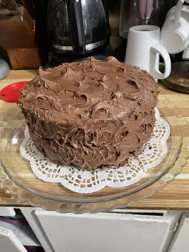

One Bowl Chocolate Cake

Description
This simple recipe was made by shirleyo on allrecipes. It is quick and simple
for anyone to be able to make. In total it only takes one hour to finish
and you only have to clean one bowl!
Ingredients
- 2 cups white sugar
- 1 3/4 cups all-purpose flour
- 3/4 cup unsweetened cocoa powder
- 1 1/2 teaspoons baking powder
- 1 1/2 tsp baking soda
- 1 tsp salt
- 2 eggs
- 1 cup milk
- 1/2 cup vegetable oil
- 2 tsp vanilla extract
- 1 cup boiling water
Steps
- Gather all ingredients
- Preheat oven to 350 degrees F or 175 degree C. Grease and flour two
nine inch round pans
- In a large bowl, stir together the sugar, flour, cocoa, baking powder,
baking soda and salt.
- Add the eggs, milk, oil and vanilla, mix for 2 minutes on medium speed
of mixer
- Stir in the boiling water last. The batter will be thin
- Pour evenly into the prepared pans
- Bake 30 to 35 minutes in the preheated oven, until the cake tests done
with a toothpick. Cool in the pans for 10 minutes then remove to a
wire rack to cool completely.
- Enjoy
Source
Full recipe
All the credit goes to chef sirleyo on allrecipes for this tasty dessert!